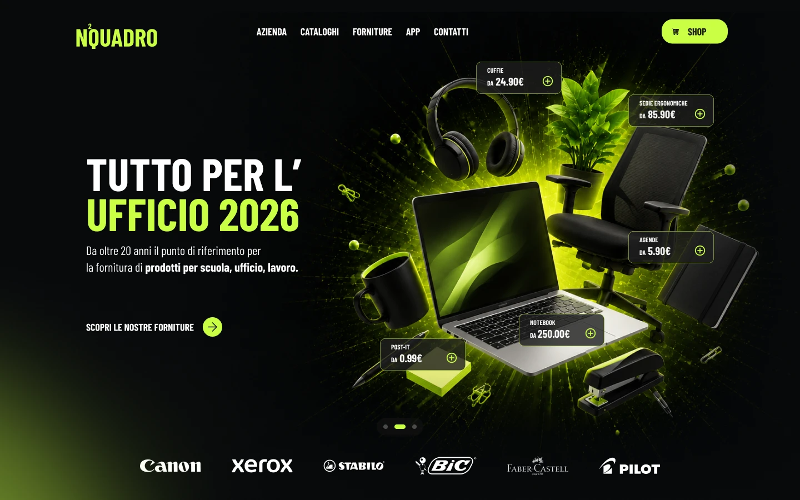
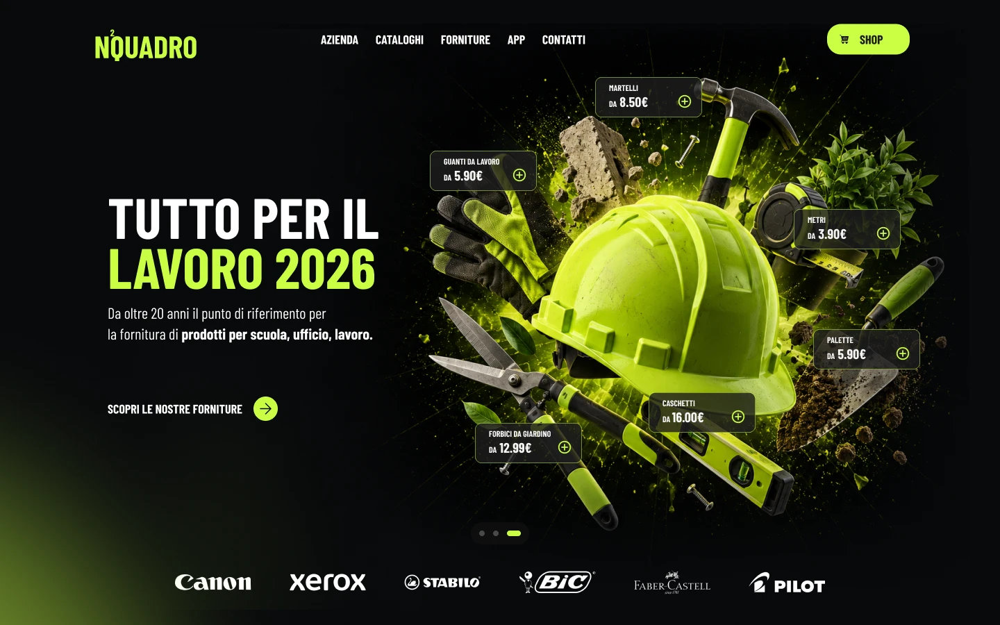
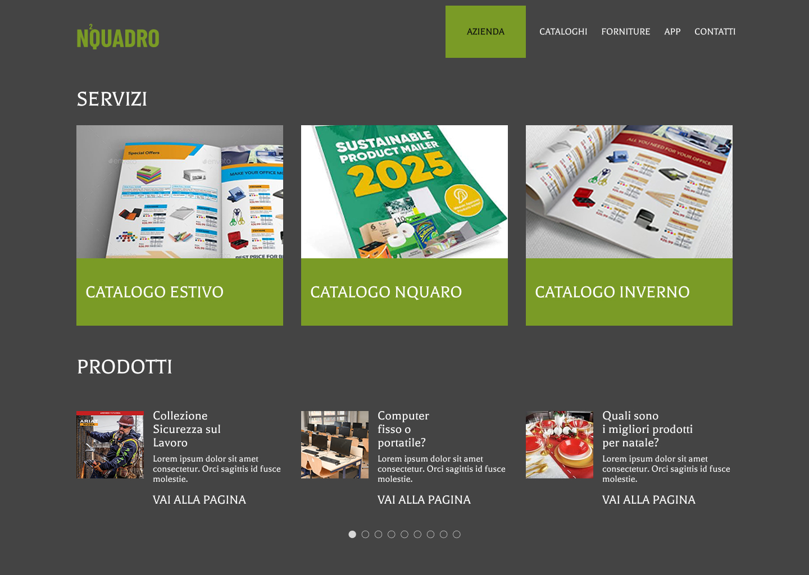
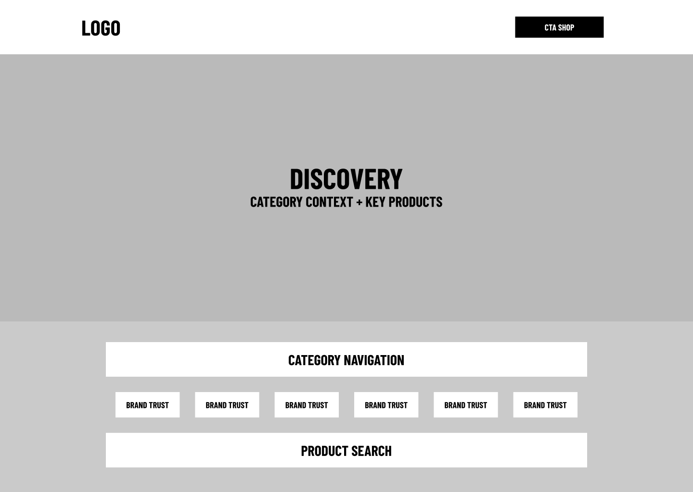
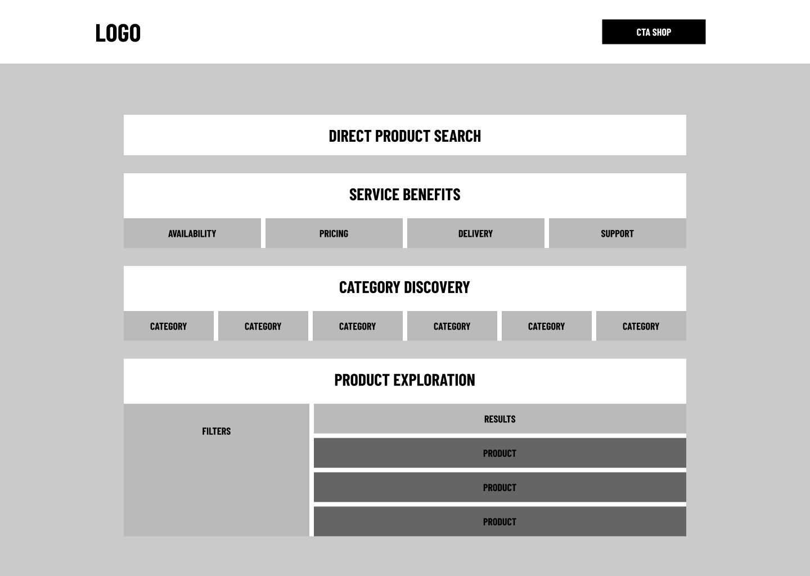
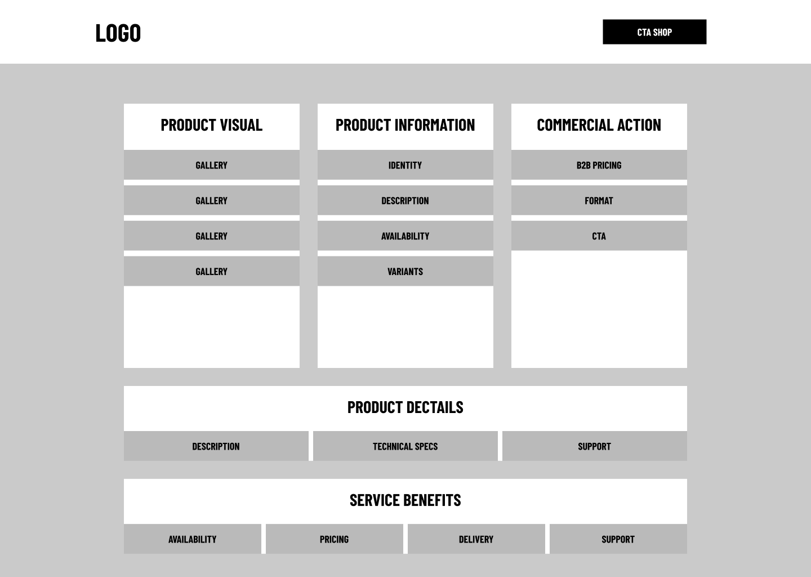
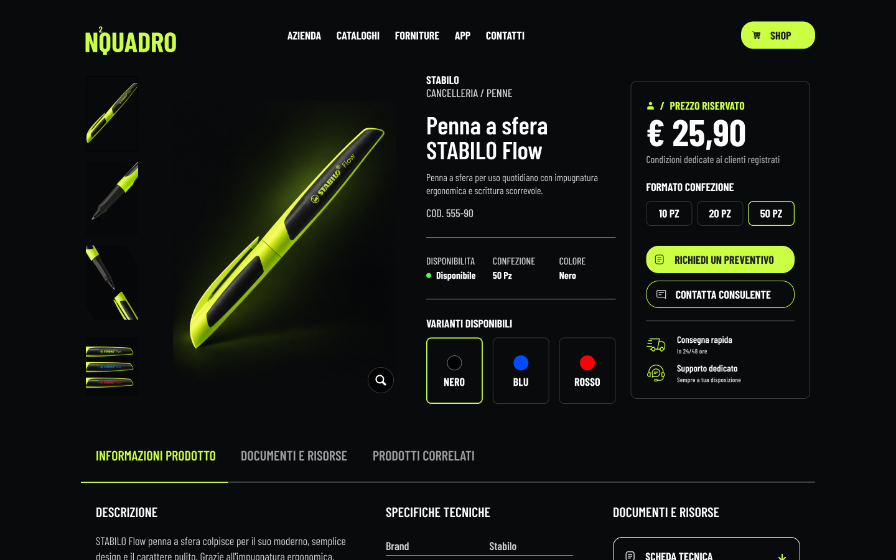

01
UX Audit
An external UX analysis highlighted issues in navigation, content hierarchy and access to product areas.
Reframing a complex catalog around product discovery.
A B2B product catalog redesign focused on making a broad offering easier to understand, explore and navigate through a clearer information architecture and a visual-first discovery experience.
Case study based on a real professional project. The identity, content and materials shown have been recreated and reworked specifically for this portfolio.



The existing experience had to accommodate a broad catalog of products, services and editorial content, but the digital structure made it difficult to understand the offering and quickly reach the most relevant products.
The problem wasn't quantity.
It was discovery.

The project started from an analysis of the existing experience. An external UX audit, available behavioral data and the reorganization of the architecture provided the inputs used to define the first design hypotheses and translate them into wireframes.
An external UX analysis highlighted issues in navigation, content hierarchy and access to product areas.
Available data on the existing experience showed interactions concentrated heavily in the upper part of pages, providing further input for rethinking product discovery.
The insights gathered converged into a shared reorganization of content and user journeys, later translated at the page level through wireframes.
The broad catalog structure made the offering difficult to interpret quickly. Instead of simply reproducing the existing catalog structure, product discovery was reorganized around macro-categories based on use and context.
Explanatory portfolio visualization of the proposed IA, not an original project artifact.
The structure was explored through high-fidelity wireframes and refined through stakeholder discussions before being translated into a consistent visual system.



The information architecture and key page structures were refined with client stakeholders, using their knowledge of the product offering and business context to improve the proposed structure.
The catalog's three core areas, School, Office and Work, needed an identity that felt immediately recognizable without fragmenting the brand's visual language.
I built a coherent hero system, differentiating each category through distinct subjects and compositions. Product modules embedded in the imagery connect the scenic storytelling to the catalog, previewing the offering and creating fast entry points into the products.
AI-assisted imagery · Interface design and composition in Figma
The final interface brings together a clearer information architecture, a consistent visual system and a product-focused discovery experience across desktop and mobile.

A real client project shaped by existing-product constraints, external inputs, stakeholder knowledge and design decisions translated into a complete digital experience.